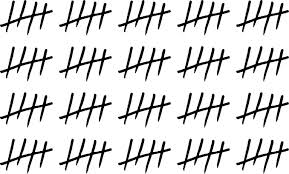

In Praise of the Hand Tally

For the past five years I've gathered statistics on how many trick-or-treaters have come by on Halloween. If you want to read about that, check out posts from last year or the year before. This post is about how I track those stats, and how I don't.
Every year I'm tempted to build some fancy system to collect and manage these statistics. Wouldn't it be fun, say, to wire up some Raspberry Pi sensor that automatically counts and tweets running totals? It wouldn't be that hard and sounds like fun.
The problem is making something like that reliable. You'd have to do all the un-fun stuff, like testing and contingency planning. If your baseline is a clipboard, paper, and a ball point pen, your bar for failure is basically "never". Even if I did build something fancy I'd still end up doing backup tallies by hand. At this human scale, the tech ends up being a fun gimmick, not required.
It reminds me of a story from friend [Tony]. Tony and his brother Tom run a giant gaming convention every year, the Evolution Championship Series (Evo for short). It's a multi-day convention in Las Vegas that attracts something like ten thousand participants. They run the whole thing with their two other founders and some friends — I'm sure they have some paid help now, but the four guys are the main ones. It's impressive.

Given that Tony and Tom are strong engineers, I figured this would be a slick high-tech operation. Not so.
Tony said they've tried tech at various points and it wasn't worth it. It's easy to see why that is tempting: they have multiple mobile coordinators that need access to changing, shared information, like brackets and schedules. But what they've tried has let them down. Usually it's not the hard parts that fail, but the basics, like batteries and wireless connectivity. So they still run this off of printouts and voice communications (cell phones/walkie-talkies) and periodic data dumps.
And so, this year I'll be gathering my Halloween stats like I always have: clipboard, pen, and a hand-held tally counter. The data will still be timely and accurate.
For the curious few, check out my Halloween Traffic Spreadsheet.
Two postscripts. First, Please stop spreading that NASA Space Pen story. I'm sure you've heard it: how do you write in zero G? the wasteful Americans commissioned a multi-million dollar space pen project; the scrappy can-do Russians used pencils. Well, this story has been debunked by the good people at Snopes.
And second, I'd like to plug Tony and Tom's "day job", Stonehearth. I think of it as Starcraft meets Minecraft. I am so eager to play it when it lands.
Comments
Comments powered by Disqus